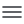

تماس با جمشید
پایینباید در مورد کارهای باقیمانده از پروژه قبلی صحبت کنیم.
کوئرا لیست
خروج

کوئرا لیست

امروز، سهشنبه، ۵ بهمن ۱۴۰۲
3 تسک را باید انجام بدهید.
باید در مورد کارهای باقیمانده از پروژه قبلی صحبت کنیم.
باید در مورد کارهای باقیمانده از پروژه قبلی صحبت کنیم.

میتونی الان تسکهاتو اینجا بنویسی و برنامهریزی رو شروع کنی!
۳ تسک انجام شده است.
خرید میوه و سبزیجات و لبنیات برای خانه